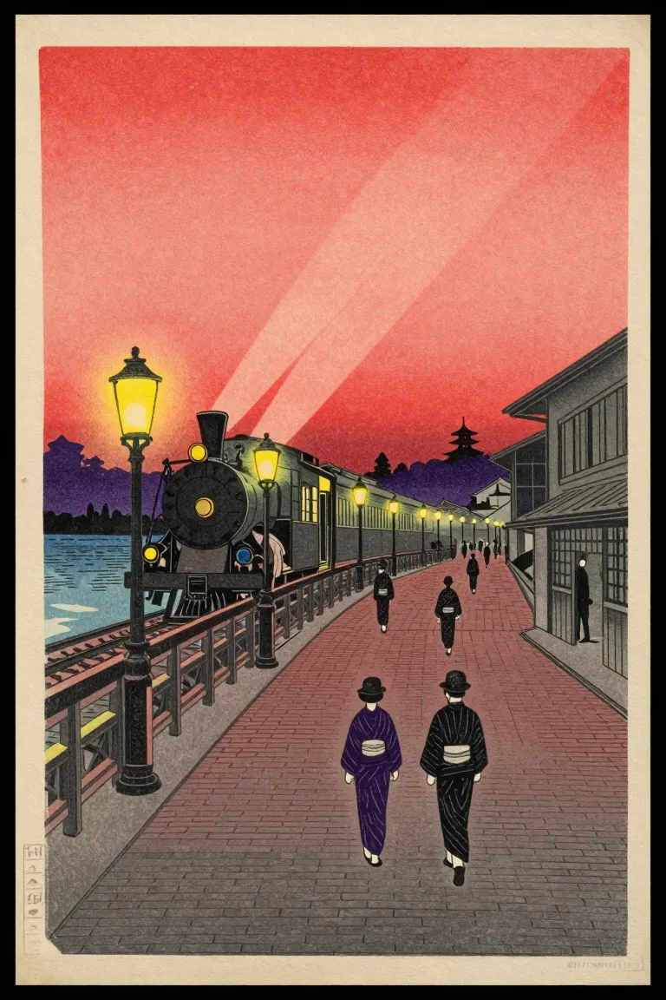

Early Meiji prints used imported synthetic (aniline) dye in hot reds and purples. Kiyochika's kosen-ga later added Western light and shadow to night scenes of gas lamps, trains and ships.

Core thesis
A woodblock print can show the new Japan, with its trains, brick streets and gas light, if it takes the hard colour and the deep shadow of the West.
Design principles
Print the sky in a strong aniline red or violet, with a wiped gradation to blue at the horizon.
Put the light source in the picture: a gas lamp, a window, the sun on water. Let rays and cast shadow fall from it.
Use 4–10 blocks, and let the shadow be a block of dark blue or violet, not a hatched line.
Choose a subject from the new city: a steam train, a brick bank, a steamship, a street at night.
Draw the street in Western perspective with one vanishing point, on a block that a Japanese carver can cut.
Let the red bleed a little at the edge of the area. Do not hold it back.
Print large commercial runs, and keep the outline in thin sumi.
Anti-patterns
The pale, soft colour of an Edo print
A flat scene with no light source and no cast shadow